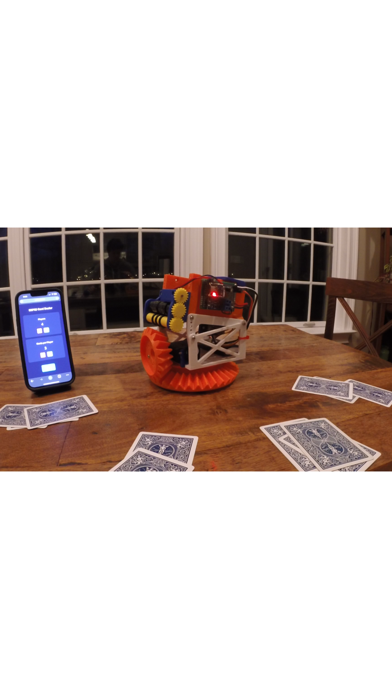
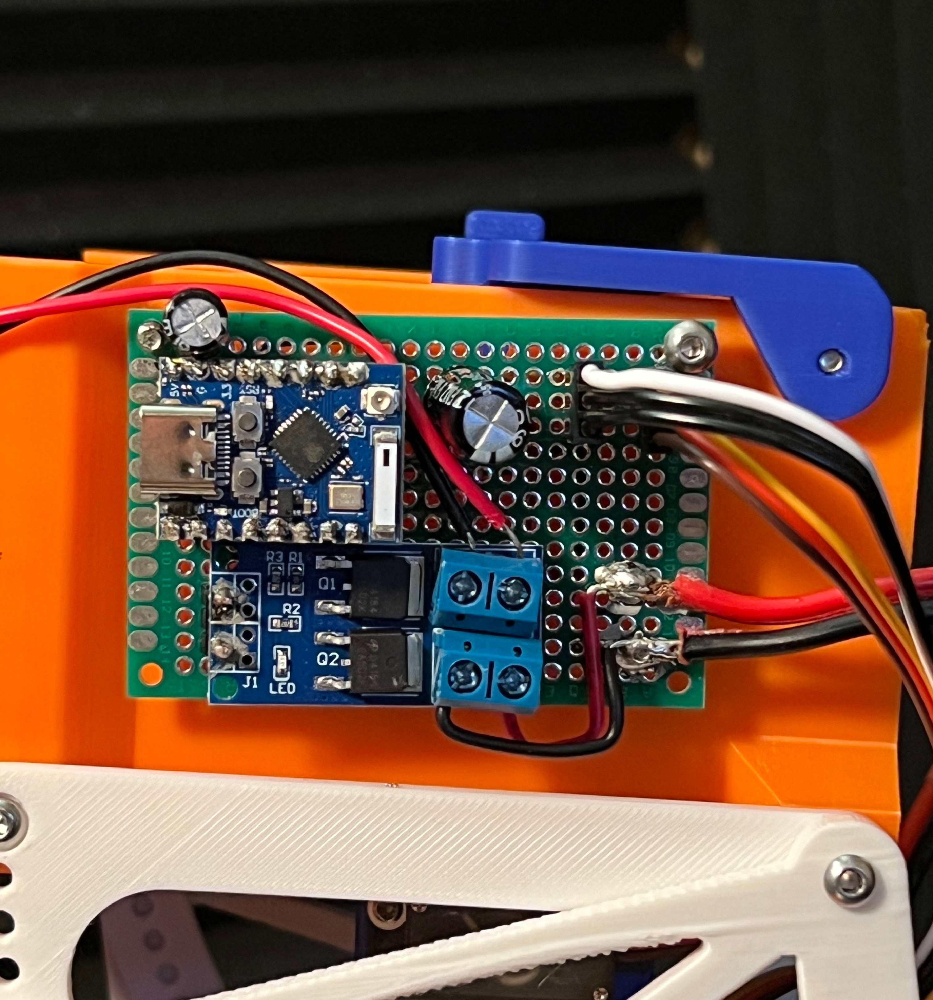

Overview
This project is a fully automated card dealer designed to dispense playing cards reliably to multiple players in a tabletop or game setting. The system is controlled via an ESP32-C3 microcontroller, with a rotator servo to position the card delivery mechanism, a pusher servo to advance individual cards, and a motor-driven roller to eject cards precisely. The machine can be operated through a simple web interface over WiFi, allowing users to set the number of players, number of cards, and initiate a dealing sequence with the push of a button.
Design and Development
I designed and built the entire machine myself. While I drew inspiration from reference images and ideas of card-dealing mechanisms online, the structure, electronics, and control system are completely my own design. I used CAD software to model the mechanical components, including the card pusher and rotator assembly, and fabricated them using 3D printing for precision and repeatability. The custom PCB board was designed, wired, and programmed by me, including the ESP32-C3 microcontroller, servo drivers, MOSFET-based motor control, and a custom web interface.


Challenges and Solutions
One of the major challenges was achieving consistent, singular card dispensing. Cards tend to stick together or misfeed when pushed too quickly, which could cause multiple cards to be dealt at once. Also, the pressure with which the cards are held in the magazine affected the reliability. To solve this, I carefully tuned the motor speed and pusher servo timing, and designed a mechanical guide to ensure only one card moves at a time, and implemented a controlled spring providing just the right amount of downward force as the cards are fed. Additionally, powering the servos and motor from the same source caused voltage drops and servo jitter. I solved this by adding dedicated voltage regulation and bulk capacitors, ensuring smooth operation and reliable servo movement. Another challenge was reliable web-based control. Ensuring that the ESP32-C3 could handle both WiFi hosting and precise timing for mechanical operations required careful software design. I implemented a robust sequencing system in the code that coordinates the rotator, pusher, and motor, with adjustable delays for tuning.
Project Demo
Results
The resulting machine reliably rotates to each player, advances a single card at a time, and can repeat this process for multiple rounds without error. The web interface allows intuitive control of the system, making it accessible and easy to operate. Overall, this project demonstrates full-stack hardware and software design, from concept and fabrication to control and automation, with all components designed and integrated by me.